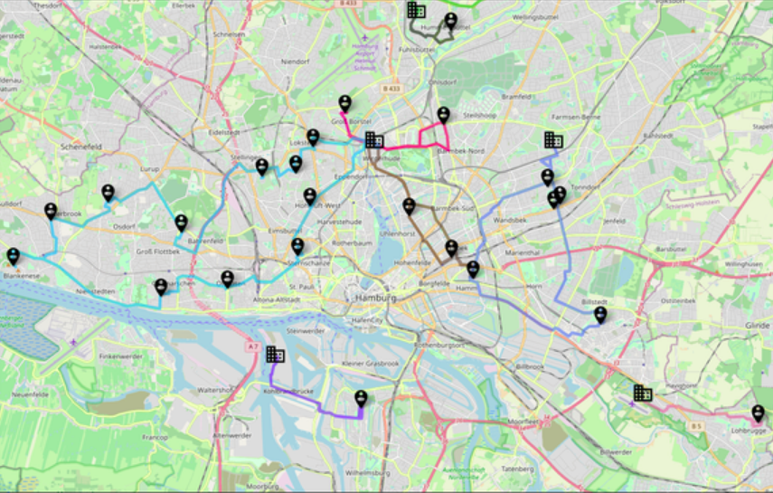

From logistics process models to automated integration testing:
Proof-of-concept using open-source simulation software
Wladimir Hofmann*, Paul Reichardt*, Sebastian Lang**, Tobias Reggelin*
* Otto-von-Guericke-University Magdeburg, Germany
** Fraunhofer Institute for Factory Operation and Automation, Magdeburg, Germany
How can an integration of simulation-based testing into modern software development workflows look like, built on open-source tools and technologies?
small city-logistics company
customers, depots, vehicles, deliveries
order management, tour planning, tracking

# from within the cloned repo:
docker-compose up
# app: http://localhost:4200
# emulation: http://localhost:5001
Thank you for your attention.